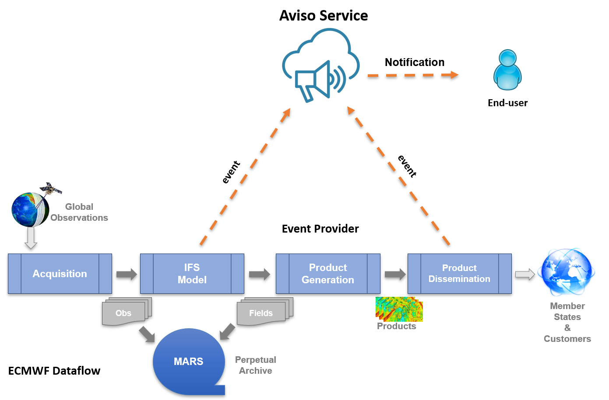

Overview¶
Aviso is a scalable notification system designed for high-throughput. It is developed at ECMWF with the aim of:
Notifying for data availability of:
Real-Time Model Output Data
Product dissemination via ECPDS
Meant for automated workflows
Based on an Event system supporting a mechanism When <this> … Do <that> …
Figure below shows ECMWF data flow; it starts from the data assimilation of observations, it then follows to the generation of the model output, the real-time global forecast. This is a time critical step for users’ workflows and therefore its completion is notified by Aviso. The data flow continues with the generation of the derived products that are then disseminated via ECMWF ECPDS system. The delivery of these products is also notified by Aviso as users depends on custom products for their downstream applications.
Aviso is a client-server application. We refer to the notification server as Aviso Service while to the client application as Aviso client or just Aviso. This guide is mostly focused on Aviso client. The server system is based on a persistent key-value store where the events are stored, the key represents the product’s metadata while the value the product’s location. Figure below represents the general workflow of the application:
Aviso client allows an End-User to subscribe to an event and to program a trigger
Aviso client polls for changes to the event defined
A notification provider submits a notification
The subscriber is notified with a new event
The event triggers user’s workflow
{kind=link}